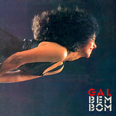
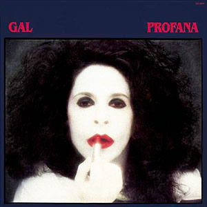
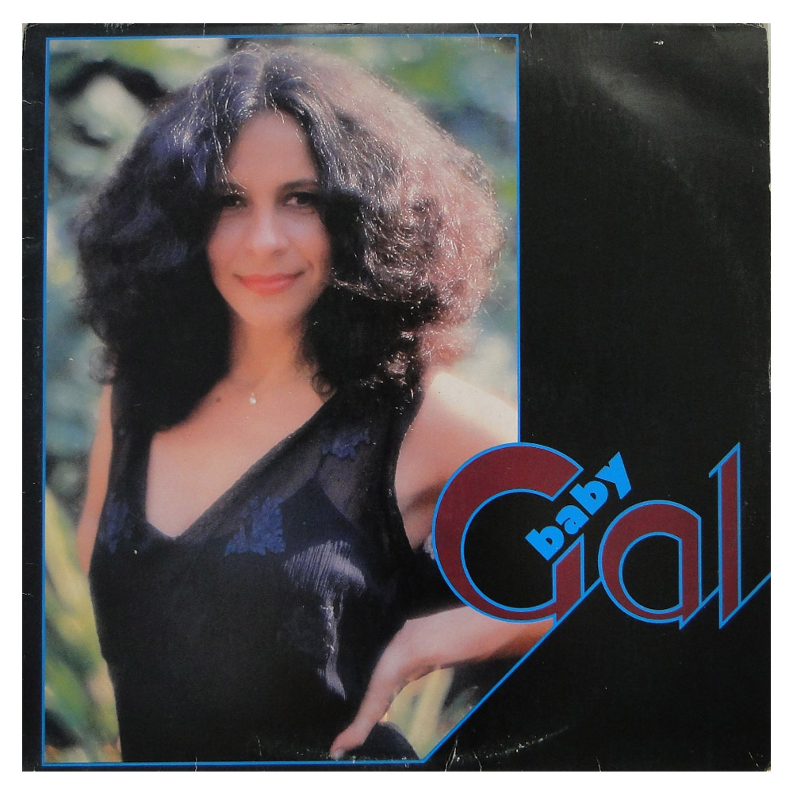

Gal Costa
2,7M seguidores
Músicas Populares
- Coração Vagabundo
- Baby
- Aquarela do Brasil
- Chuva de Prata
- Divino Maravilhoso
Álbuns

Bem Bom

Profana

Baby
Playlists
- Coleção MPB
- This is Gal Costa
- O Melhor do MPB
Sobre Gal Costa
Gal Maria da Graça Penna Burgos Costa (nascida Maria da Graça Costa Penna Burgos; Salvador, 26 de setembro de 1945 – São Paulo, 9 de novembro de 2022) foi uma cantora e compositora brasileira. Considerada uma das cantoras mais plurais do Brasil e do mundo, Gal transitou em todos os gêneros musicais e foi a cantora brasileira mais bem colocada na lista de 200 maiores cantores e cantoras de todos os tempos pela revista Rolling Stone, bem como foi eleita, pela revista Time, uma das 10 maiores cantoras do mundo.